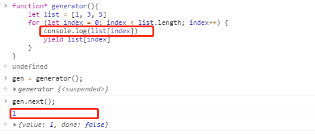
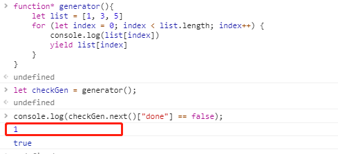

yield关键字
yield是ES6的新关键字，使生成器函数执行暂停，yield关键字后面的表达式的值返回给生成器的调用者。它可以被认为是一个基于生成器的版本的return关键字。
yield关键字实际返回一个IteratorResult（迭代器）对象，它有两个属性，value和done，分别代表返回值和是否完成。
yield无法单独工作，需要配合generator(生成器)的其他函数，如next，懒汉式操作，展现强大的主动控制特性。
generator使用
基本使用
1 | // 函数 |
懒汉式加载
此处可以看出循环中的打印是在Generator对象调用next方法后产生的，由此可知打印代码为next方法调用后执行

判断
只要调用next方法，就会执行一次代码不论是在什么场景下(打印，判断)

说明
yield并不能直接生产值，而是产生一个等待输出的函数
除IE外，其他所有浏览器均可兼容（包括win10 的Edge）
某个函数包含了yield，意味着这个函数已经是一个Generator
如果yield在其他表达式中，需要用()单独括起来
yield表达式本身没有返回值，或者说总是返回undefined(由next返回) [^注]
- next()可无限调用，但既定循环完成之后总是返回undeinded
[^注]: 当yield在赋值表达式的右边，比如 var result = yield 4，yield语句本身没有返回值，或者说返回值是undefined，但是当我们调用next(param)传参的时候，param不但作为next返回对象的value值，它还作为上一条yield 的返回值，所以result 才会被成功赋值。
next()函数及参数
- 在js中，虽然借鉴了python的函数，但是也进行了自己的改造，由于没有send()函数，所以无法直接传递yield的值。
- next()可以带一个参数，该参数会被认为是上一个yield整体的返回值，稍后将在代码中展示。
- 在某种程度上，next()可以直接当做send()使用
它的意义在于，可以在不同阶段从外部直接向内部注入不同的值来调整函数的行为(这一点是其他循环很难做到的，或要付出较大的代价才可以做到)
目前项目中的可用性
在前端项目中，用的机会很少，完全可以忽略他的存在，但是在后台项目中，就显得比较重要了，因为其优越的可控性，可是极大的提升线程的效率。
如果需要实例的话，可参考github上的一些python后端项目，调用方式稍有不同，由于js参考的python语言，他们又同为动态语言，所以原理都是相同的，用处也一样。